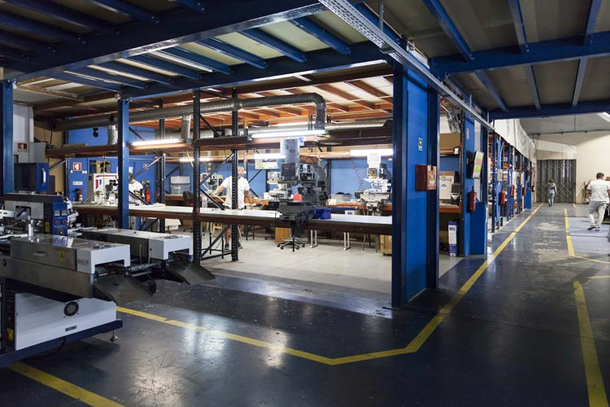

Empresas com atividade documentada nesta área
Exemplos para compreender funções e modelos de trabalho. As atividades são atribuídas às fontes oficiais consultadas; não constituem uma recomendação comercial.

Dimatur
Turquel, Portugal · sede logística e administrativa
Fornecedor de materiais e equipamentos
Documenta matérias-primas, consumíveis e tecnologia para comunicação visual e transformação, acompanhados de assistência técnica e formação.
Ler o perfil de Dimatur →Fontes: Dimatur — Quem somos · Dimatur — História

Eurovinil
Maia, Portugal · localização publicada
Distribuição de consumíveis e equipamentos
Descreve fornecimento para comunicação visual, serigrafia e impressão digital, com suporte técnico e formação. Fornecer materiais e máquinas não equivale a executar a personalização dos artigos.
Ler o perfil de Eurovinil →Fontes: Eurovinil — Sobre nós · Eurovinil — Localização publicada
Três tipos de fornecimento
Uma matéria-prima é um material que será transformado ou incorporado no artigo. Um consumível é utilizado durante a operação e precisa de reposição, como uma tinta ou película. Um equipamento executa uma operação, como imprimir, cortar ou prensar. Fornecer estes meios é uma função distinta de vender um brinde acabado.

Exemplos a montante da produção
A cadeia dos brindes cruza-se com a comunicação visual e as artes gráficas no fornecimento de suportes, tintas, películas e equipamentos. Estar a montante da produção significa disponibilizar meios que outra organização pode transformar ou utilizar na personalização; não comprova a execução do artigo acabado.
Compatibilidade e apoio técnico
A adequação de uma tinta, película ou suporte depende do processo e do material de destino. O apoio técnico e a formação podem ajudar a configurar a operação, mas não comprovam compatibilidade universal. Importa consultar a documentação do produto e realizar os ensaios necessários. O fornecimento de um material também não identifica automaticamente o seu fabricante.
Fontes e âmbito
Fontes oficiais consultadas para as atividades atribuídas às empresas. As explicações das funções e do percurso são sínteses editoriais; não descrevem um modelo universal nem avaliam o desempenho dos fornecedores.
- Dimatur — Quem somos — consulta: .
- Eurovinil — Sobre nós — consulta: .
- Dimatur — História — consulta: .
- Eurovinil — Localização publicada — consulta: .